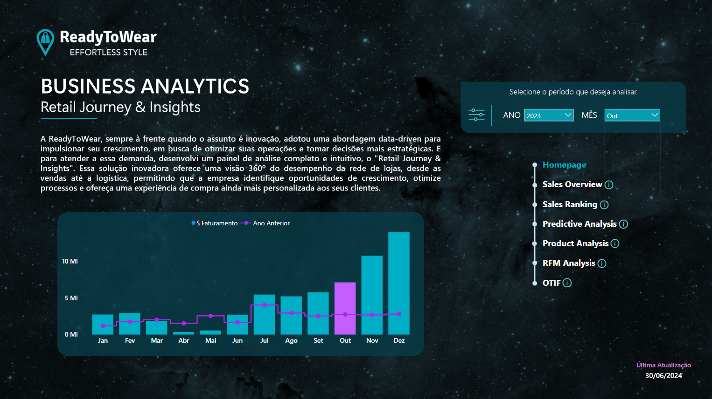
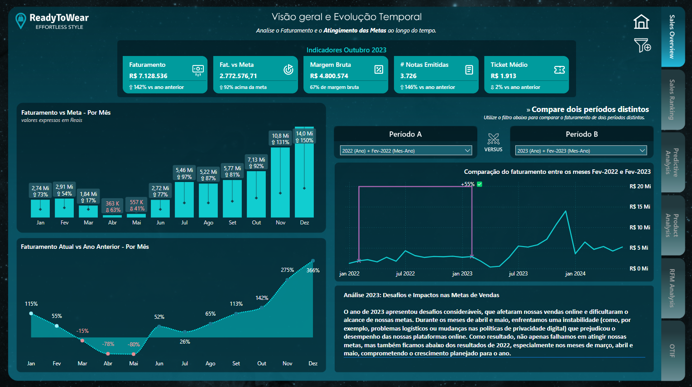
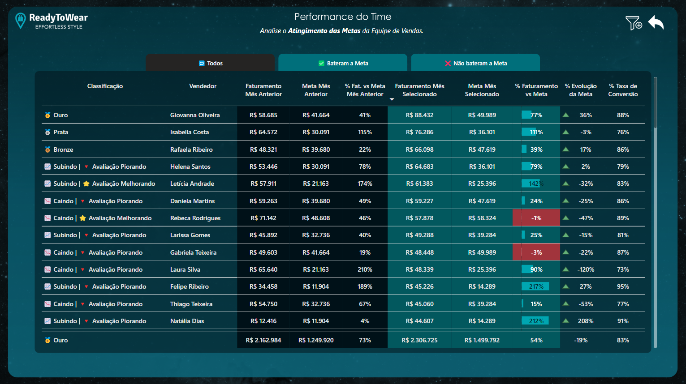
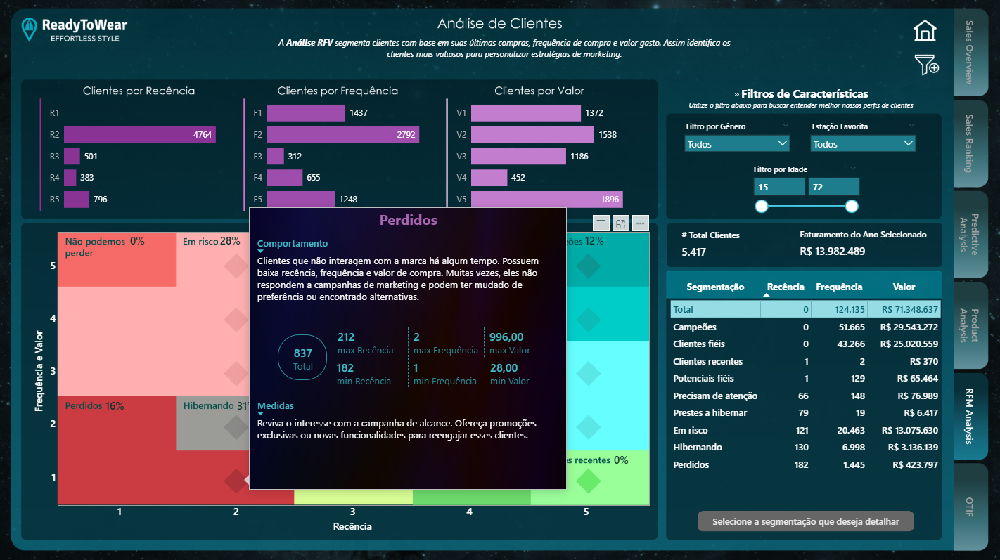
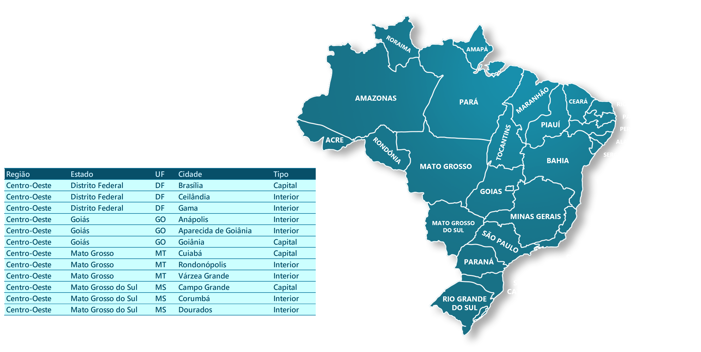

Homepage
Uma visão panorâmica do relatório, permitindo explorar dados mês a mês e identificar rapidamente padrões e tendências.






A ReadyToWear opera tanto online quanto em lojas físicas distribuídas pelo Brasil. A ideia deste projeto é simular cenários reais de negócios, observando métricas por região e buscando insights que melhorem a experiência do cliente, eficiência operacional e tomada de decisão estratégica.

Aqui você pode navegar por indicadores e métricas que mostram como os dados podem orientar decisões. Cada visualização foi pensada para facilitar a interpretação, destacando tendências, oportunidades e pontos de atenção de forma clara e objetiva.
Uma visão panorâmica do relatório, permitindo explorar dados mês a mês e identificar rapidamente padrões e tendências.




Gosto de dar forma, cor e propósito aos dados. Se o objetivo é dar vida aos dados com clareza, estratégia e um design agradável de explorar, será um prazer conversar por e-mail ou LinkedIn.